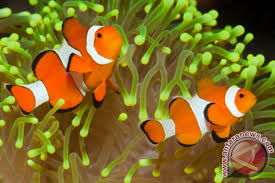

Penyu adalah hewan yang banyak di temukan bertelur di beberapa pesisir pantai di Indonesia sejak dahulu

Ikan badut ini dapat dikenali dengan warna jingganya, ikan ini tumbuh mencapai 8 cm serta termasuk dalam ikan terpopuler di dunia.

Lion fish atau volitans adalaj ikan beracun dari keluarga Scorpaenidae atau ikan kalajengkin

Ikan Moorish Idol adalah salah satu ikan yang cukup populer di kalangan ara hobiis ikan hias karena bentuknya yang unik dan pola warnanya yang menarik.